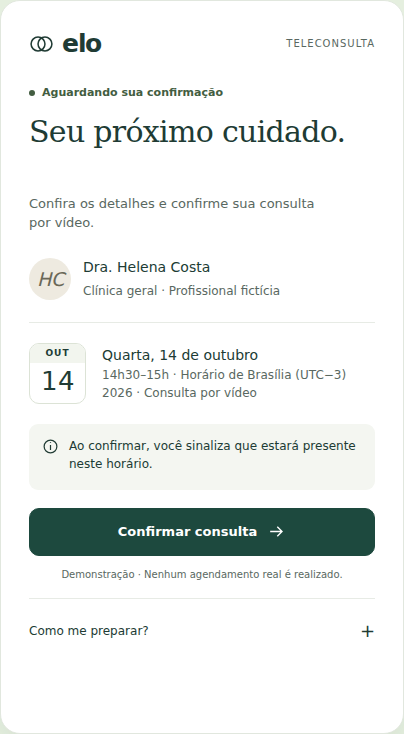
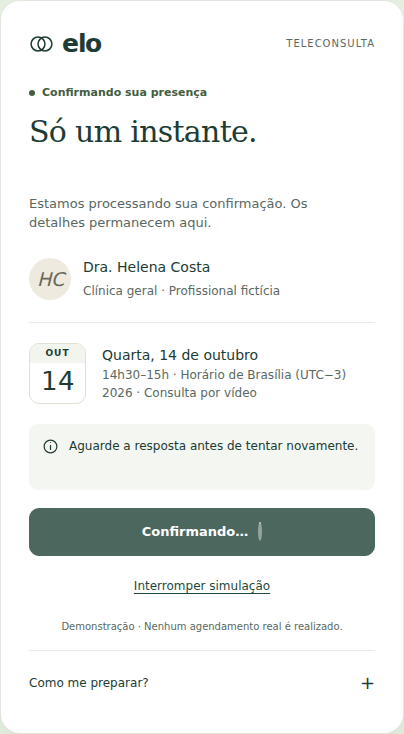
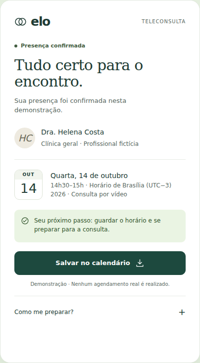
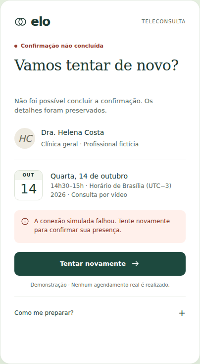

Um pequeno
momento de
certeza.
Confirmação de teleconsulta.
Um componente, quatro estados.
Uma resposta clara a cada ação.

Como saber
que deu certo?
O exercício parte de uma dúvida possível: depois de confirmar uma consulta, a pessoa consegue distinguir espera, conclusão e falha?
Desenhar o comportamento.
Finalizar um momento.
O recorte é uma única ação: confirmar presença em uma consulta previamente definida. A pessoa revisa data, horário, fuso e profissional antes de agir.
A resposta aparece no próprio componente. Se a tentativa falhar, as informações permanecem e há uma ação de recuperação.
Sem cadastro, seleção de horários ou sala de vídeo. Essa fronteira permitiu concluir um artefato pequeno e apresentável.
O contexto fica.
A resposta muda.
Data e profissional permanecem no mesmo lugar. Títulos, mensagens e ações acompanham o que aconteceu.
Orientar.
Os dados estão à vista. Uma ação principal explicita o compromisso: confirmar presença.

Acompanhar.
Feedback imediato e ação bloqueada contra envios repetidos. A simulação pode ser interrompida.

Concluir.
Confirmação persistente e um próximo passo concreto: salvar o evento fictício no calendário.

Recuperar.
Mensagem específica, sem culpar a pessoa. Os dados são preservados para uma nova tentativa.
Pequena por fora.
Explícita por dentro.
- Trigger
- Clique, toque, Enter ou Espaço no botão de confirmação.
- Rules
- Uma tentativa ativa por vez. Sucesso só depois da resposta simulada. Falha preserva os dados.
- Feedback
- Texto, símbolo e estado do botão. Mensagens programáticas para tecnologias assistivas.
- Loops / modes
- Retentativa manual. Sucesso permanece. Controles de cenário pertencem à demonstração.
Calma como decisão visual.
Tipografia editorial no título, interface compacta nos dados e verde profundo na ação. O movimento informa a mudança sem interromper o uso.
Foco visível, botões nativos, informações que não dependem só de cor e alternativa sem animações para movimento reduzido.
Verificação técnica de teclado, estados, layout e contraste. A experiência com leitores de tela e a compreensão por pacientes ainda precisam de avaliação humana.
Um case pode terminar
em um único componente.
O resultado é um protótipo executável, com caminho de sucesso, falha recuperável e tempo de espera limitado. A contribuição do exercício está nas decisões observáveis de comportamento e apresentação.
Próxima pergunta de pesquisa: as pessoas identificam corretamente quando a confirmação terminou e o que fazer após uma falha? Isso permanece uma pergunta, não um resultado.
Implementação e documentação assistidas por IAReferência metodológica: Interaction Design skill
Trigger · Rules · Feedback · Loops / Modes